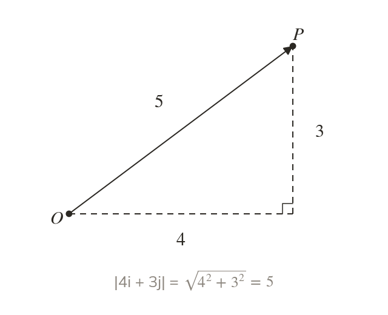
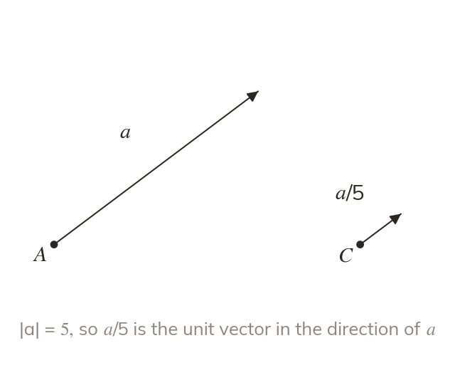
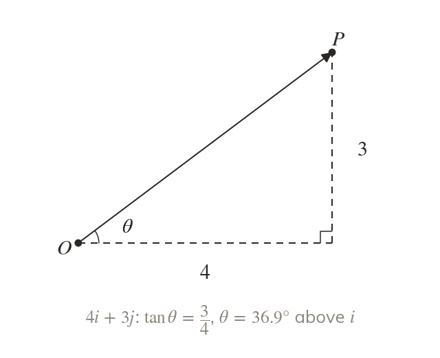
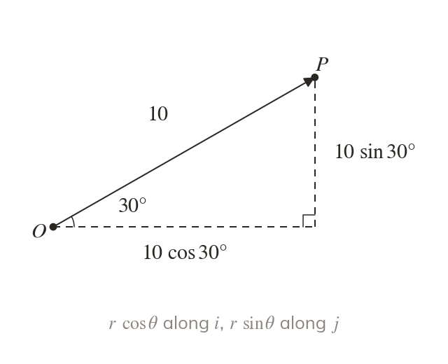

Pythagoras gives the length
The i and j parts are the two shorter sides of a right-angled triangle. So the magnitude of is which is never negative.
A vector's two parts are the two short sides of a right-angled triangle, so its length and its angle come from Pythagoras and trigonometry. The unit vector and the magnitude-and-direction form set up speed, resultant forces and bearings in mechanics.
Work down the page at your own pace. Write every answer in your book first, then click to check it.
Read each card, then follow the worked examples one step at a time.

The i and j parts are the two shorter sides of a right-angled triangle. So the magnitude of is which is never negative.

A unit vector has magnitude
Dividing a by keeps its direction and makes its length
Pick an answer. If it's wrong, the feedback tells you which mistake it was.
Read each card, then follow the worked examples one step at a time.

The angle with comes from part ÷ part, using the sizes of the parts. A sketch shows which angle the question wants.

A vector of magnitude r at an angle θ above i has parts r and r So magnitude at above i is
Pick an answer. If it's wrong, the feedback tells you which mistake it was.
Finished? Next lesson: 11.4 Position Vectors.
For each skill, tap the one that is true for you today. Your Revise pages start with anything you mark Not yet.
Your ratings are saved on this device only.
Log in, then search for a code to practise that skill.